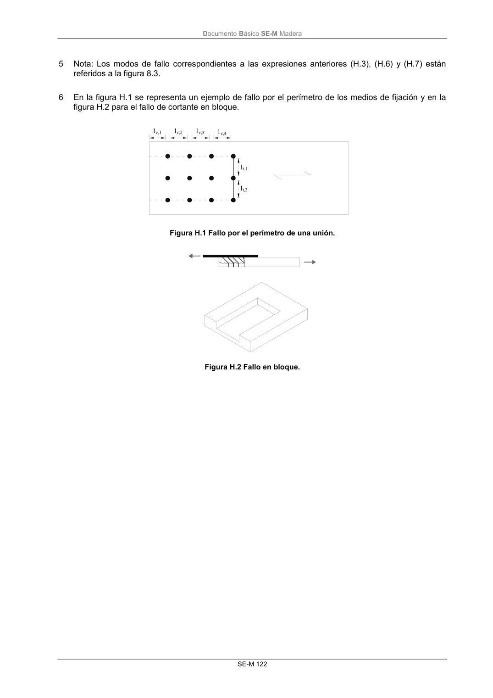

DB-SE-M · Página 128 · versión 2019-12-20
SHA256: 26b5819839ebfda78b0b119c5e76a0a37773b0d763c05688541870075df93718 · página física 128 de 132 · métodos de encabezado
solo si están cotejados.
Documento · ← p. 127 · p. 129 →
Formatos: Markdown · JSON de bloques · PDF p. 128 · imagen PNG
Documento Básico SE-M Madera SE-M 122 5 Nota: Los modos de fallo correspondientes a las expresiones anteriores (H.3), (H.6) y (H.7) están referidos a la figura 8.3. 6 En la figura H.1 se representa un ejemplo de fallo por el perímetro de los medios de fijación y en la figura H.2 para el fallo de cortante en bloque. v,1 v,2 v,3 v,4 t,1 t,2 l l l l l l Figura H.1 Fallo por el perímetro de una unión. Figura H.2 Fallo en bloque.
